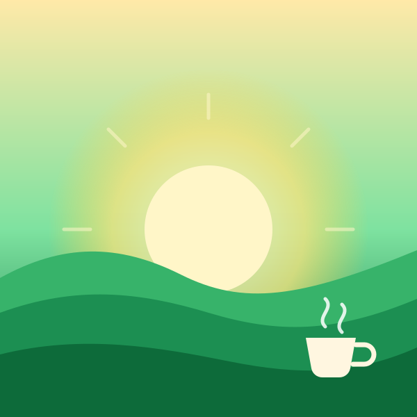

Descoberta
Sugestões que aprendem com o que você repete, pula e salva.
Afinando 0%
Conceito independente · Connect Alpha
Uma jornada em que a música vira imagem: do silêncio ao show, do vinil ao seu ano inteiro. Role, clique, gire.

Capítulo 01 · Silêncio
Uma linha parada, um segundo antes do primeiro compasso. É dali que sai tudo o que você ouve.
Capítulo 02 · Batida
O ritmo organiza o caos. Cada barra que sobe é um instrumento entrando na sala.
Capítulo 03 · Playlist
Foco, treino, estrada, madrugada. O disco gira, a sala muda, e a música certa já está tocando.
Capítulo 04 · Show
Fone no ouvido é íntimo. Estádio é coletivo. A mesma canção, dois jeitos de sentir.
Capítulo 05 · Seu ano
Minutos viram retrato. O que você repetiu mostra quem você foi neste ano.
Números ilustrativos, só para o conceito.
Para cada momento
Seis climas. Cada card tem cor, ritmo e jeito próprios, e o fundo da página muda com eles.
Toque em um card para mudar a cor e a batida da página.
O que a experiência faz
Sugestões que aprendem com o que você repete, pula e salva.
Celular, computador, carro e caixa de som. A fila continua de onde parou.
Playlists colaborativas e sessões em grupo, cada um acrescenta a sua faixa.
Música e conversa no mesmo lugar, com capítulos e velocidade ajustável.
Perguntas
Não. É um projeto conceitual independente, criado pela Connect Alpha para mostrar direção de arte e rolagem cinematográfica. Não tem patrocínio nem aprovação do Spotify.
É sintetizado na hora, no seu navegador (Web Audio). Nenhum arquivo de música é usado. Liga e desliga no botão Som ou na tecla M.
Não, são ilustrativos. Servem só para mostrar o capítulo final.
Dá. Um site de jornada pode ser montado para qualquer negócio. Chame a Connect Alpha no WhatsApp.
Fim da faixa
Conceito independente feito pela Connect Alpha. Quer uma jornada assim para a sua marca?